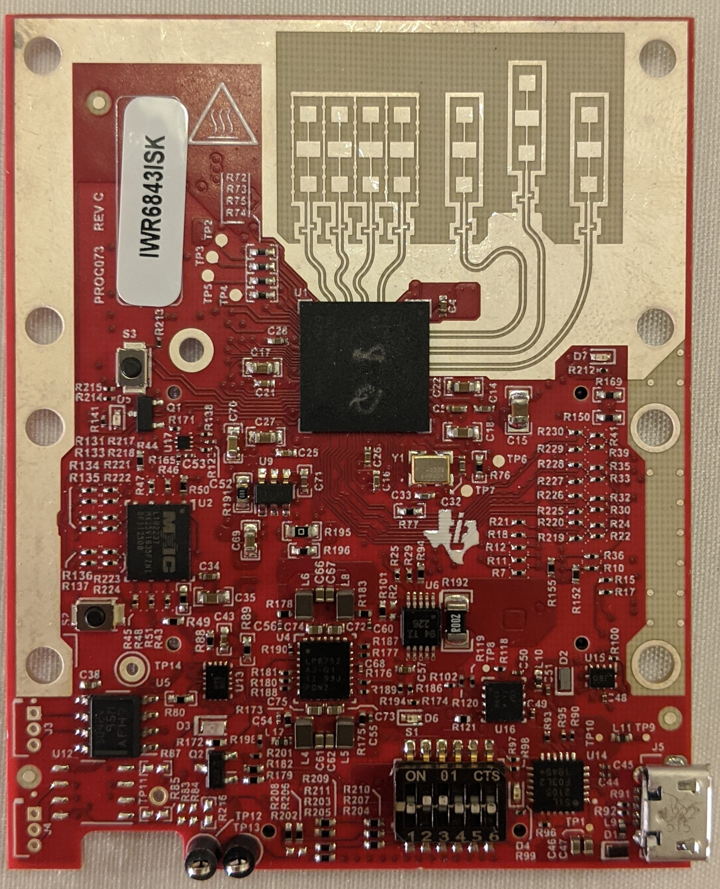
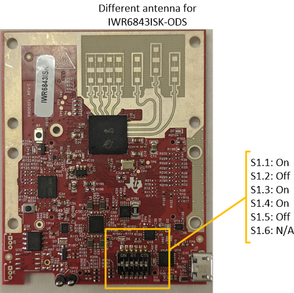
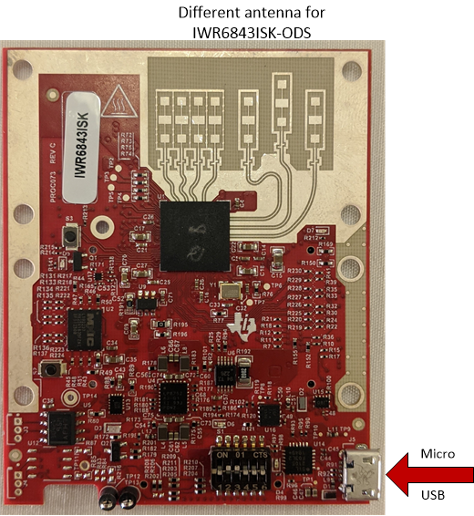
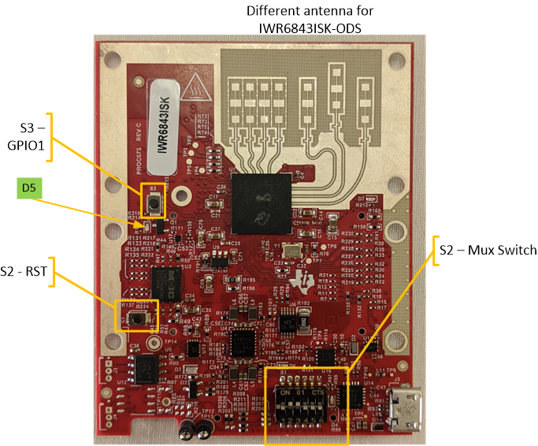

Hardware Setup of IWR6843ISK/ODS for Flashing Mode
===========
This guide is intended for users with an **IWR6843ISK (Rev. C or later)** or **IWR6843ISK-ODS (Rev. B or later)** EVM.
The guide will walk through setting up the board into **Flashing Mode** when the EVM is used in modular mode.
NOTE: The [MMWAVEICBOOST Carrier Board](http://www.ti.com/tool/MMWAVEICBOOST) is **NOT** necessary to flash the IWR6843ISK Rev.C or IWR6843ISK-ODS Rev.B.
However, if desired these modules can be used as an antenna module board with the MMWAVEICBOOST.
See [Hardware Setup of MMWAVEICBOOST + Antenna Module for Flashing Mode](../hardware_setup/hw_setup_mmwaveicboost_mode_flashing.html)

# 0. Requirements
### Required and Supported mmWave Evaluation Modules (EVM)
Quantity | Item
------------------|-----------------
1 | [IWR6843ISK Rev.C](http://www.ti.com/tool/IWR6843ISK) or [IWR6843ISK-ODS Rev. B](http://www.ti.com/tool/IWR6843ISK-ODS)
### Additional Requirements
Quantity | Item
---------|--------------------------
1 | Micro USB Cable
# 1. Configure EVM
To use the EVM in standalone modular mode (without MMWAVEICBOOST) the switches on the front need to be set as shown:
### Front of IWR6843ISK/ODS

# 2. Connect micro-USB
Connect the micro-USB cable to the EVM at the connector shown and then to a PC.
Note that a separate power supply is not needed as the IWR6843ISK/ODS gets power from the USB connection itself.
LEDs on the EVM should turn on.

# 3. Set SOP Mode for Flashing Mode
Ensure flashing mode is enabled by setting the SOP switch as shown in table below.
### Flashing Mode
| S1.1| S1.2 | S1.3 | S1.4 | S1.5 | S1.6
-----------------------|-----|------|------|------|------|------
S1 switch settings | On | Off | On | On | Off | N/A
# 4. Toggle RST switch
To ensure that the correct SOP mode is latched once power has been applied, power cycle and then press and release the RST switch identified below. The green LED near S3 should toggle OFF and ON when the switch is depressed then released.

[[y! Toggling NRST
After any SOP mode change, RST should be always be toggled to ensure a reliable boot-up state.
]]
Next Step
===========
Now that the hardware has been setup for **Flashing Mode**, go to the software guide for [Using UniFlash with mmWave](../software_setup/using_uniflash_with_mmwave.html).
Need More Help?
===========
* Consult the [mmWaveICBoost and Antenna Module User's Guide](http://www.ti.com/lit/pdf/swru546)
* Search for your issue or post a new question on the [mmWave E2E forum](https://e2e.ti.com/support/sensor/mmwave_sensors/f/1023)